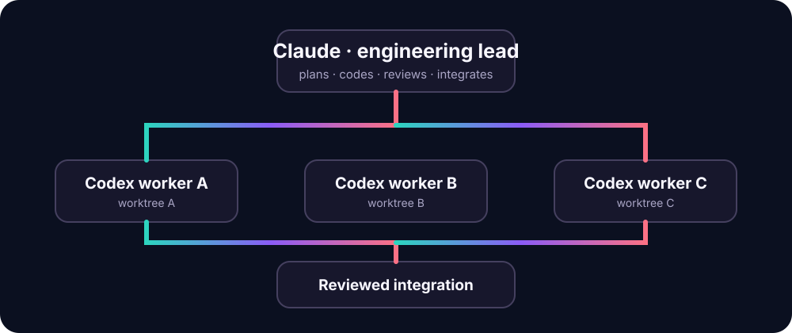

T1
API layer
isolated worktree
Local orchestration for Claude + Codex
Claude leads.
Codex scales.
Tangle lets Claude Desktop or Claude Code direct a parallel pool of isolated Codex workers—without surrendering context, coding authority, or the final review.
- ● Local-first
- ● Review-gated
- ● No hosted backend
LEAD AGENT
Claude
in control
Architecture, context, direct coding & review
delegates safely
T2
Interface
isolated worktree
T3
Test suite
isolated worktree
REVIEW GATEClaude approves every integration
100%local project state
0required cloud services
1human-controlled branch
∞room for focused workers
The operating model
Parallel work without parallel chaos.
Tangle gives each worker a precise lane, then hands the result back to Claude for review. Your active session stays the center of gravity.
Attach
Capture a clean or in-progress coding session without stashing, resetting, or touching your current index.
Delegate
Claude assigns bounded tasks with explicit file ownership, dependencies, acceptance criteria, and tests.
Review
Every Codex result is checked for scope, commits, tests, and architectural fit before it can move forward.
Integrate
Accepted changes return as an unstaged delta. Claude can refine them, and you keep final commit control.
Codex-first, not Codex-only
Your chosen Claude model stays in the driver's seat.
Tangle adds leverage to Claude—it does not replace it. Claude keeps the complete conversation, native tools, and the freedom to implement directly whenever that is the better call.
Codex
Large, routine, parallelizable implementation
Claude
Architecture, tiny edits, high-risk work, and conflicts
Together
Independent review, testing, and final integration

Designed for real machines
Safe by default. Resource-aware by design.
Dirty-tree snapshots
Attach midway through a session without destroying, hiding, or rewriting Claude's existing work.
Isolated worktrees
Each worker receives a private branch and a non-overlapping ownership boundary.
Explicit review gate
No worker result integrates until Claude records a deliberate acceptance decision.
Storage-aware
Put worktrees and larger artifacts on an external APFS or HFS+ volume when internal space is tight.
Memory-aware
Automatic concurrency limits help lower-memory Macs avoid application-memory pressure.
Local dashboard
See active workers and reconcile status in a localhost-only interface with no remote assets.
Start from zero
Install Tangle in Claude Desktop.
Nothing is assumed to be installed yet. Tangle remains on your Mac, points at one project folder, and does not require a hosted Tangle account or backend.
macOSGitPython 3.10+Codex CLI
Read the complete setup guide ↗
-
1
Download Tangle
Clone the project somewhere permanent on your Mac.
git clone https://github.com/mmholdings/tangle.git
cd tangle -
2
Build the Claude extension
This creates the installable bundle locally.
python3 scripts/build_mcpb.py -
3
Add it to Claude Desktop
Open Settings → Extensions → Advanced settings → Install Extension… and choose
dist/tangle.mcpb. -
4
Select your project
Choose the Git project Tangle may manage. Then ask Claude to initialize Tangle and run its doctor check.
One lead. Many hands.
Still your codebase.
Bring focused parallelism to your next Claude coding session.